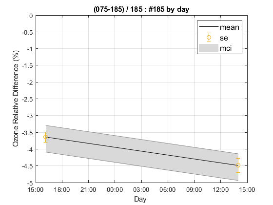
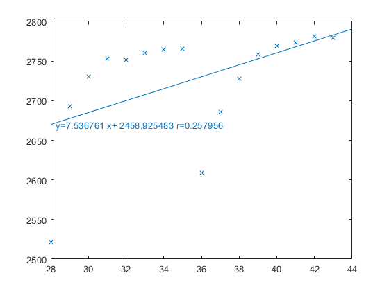

Contents
- Brewer Evaluation
- Brewer setup
- READ Brewer Summaries
- configuration files
- DT analysis
- SL Report
- SL report plot
- Hg Report
- READ Configuration
- Data recalculation for summaries and individual observations
- Filter distribution
- filter correction
- Ozone Calibration
- Change?
- Blind Period
- Sugerido con los blind_days
- Blind days table
- Final Period
- STRAY LIGHT
- Final days table
- Summary Final Comparison all data detailed for osc ranges
- Plot daily summary
- detailed comparison
% options_pub.outputDir=fullfile(pwd,'latex','075','html'); options_pub.showCode=true; % close all; publish(fullfile(pwd,'cal_report_075c.m'),options_pub);
Brewer Evaluation
clear all; file_setup='arenos2019_setup'; eval(file_setup); % configuracion por defecto Cal.n_inst=find(Cal.brw==075); Cal.file_latex=fullfile('.','latex',Cal.brw_str{Cal.n_inst}); Cal.dir_figs=fullfile('latex',filesep(),Cal.brw_str{Cal.n_inst},... filesep(),[Cal.brw_str{Cal.n_inst},'_figures'],filesep()); mkdir(Cal.dir_figs); try save(Cal.file_save,'-Append','Cal'); %sobreescribimos la configuracion guardada. load(Cal.file_save); catch disp('clean'); save(Cal.file_save); end
ans =
1×1 cell array
{'IZO#185'}
ans =
20×9 cell array
Columns 1 through 5
{'TSK#005'} {[ 5]} {[2]} {[0]} {'005'}
{'IOS#017'} {[ 17]} {[2]} {[0]} {'017'}
{'SCO#033'} {[ 33]} {[2]} {[0]} {'033'}
{'MAD#070'} {[ 70]} {[4]} {[0]} {'070'}
{'UK_#075'} {[ 75]} {[4]} {[0]} {'075'}
{'MUR#117'} {[117]} {[4]} {[0]} {'117'}
{'UK_#126'} {[126]} {[4]} {[0]} {'126'}
{'ARE#150'} {[150]} {[3]} {[0]} {'150'}
{'COR#151'} {[151]} {[4]} {[0]} {'151'}
{'K&Z#158'} {[158]} {[3]} {[0]} {'158'}
{'WRC#163'} {[163]} {[3]} {[0]} {'163'}
{'ZAR#166'} {[166]} {[4]} {[0]} {'166'}
{'UK_#172'} {[172]} {[3]} {[0]} {'172'}
{'JAP#174'} {[174]} {[3]} {[0]} {'174'}
{'IZO#185'} {[185]} {[3]} {[0]} {'185'}
{'MAD#186'} {[186]} {[3]} {[0]} {'186'}
{'CAN#190'} {[190]} {[3]} {[0]} {'190'}
{'TAM#201'} {[201]} {[3]} {[0]} {'201'}
{'DNK#202'} {[202]} {[3]} {[0]} {'202'}
{'DNK#228'} {[228]} {[3]} {[0]} {'228'}
Columns 6 through 9
{'..\005\ICF15117…'} {'..\005\ICF17219…'} {'1838'} {'1838'}
{'..\017\ICF14919…'} {'..\017\ICF14919…'} {'1680'} {'1680'}
{'..\033\ICF15617…'} {'..\033\IOS15617…'} {'2325'} {'2325'}
{'..\070\ICF15617…'} {'..\070\IOS15617…'} {'1685'} {'1685'}
{'..\075\ICF15017…'} {'..\075\ICF17819…'} {'1714'} {'1714'}
{'..\117\ICF15517…'} {'..\117\IOS15517…'} {'1620'} {'1620'}
{'..\126\icf15517…'} {'..\126\ICF17419…'} {'1710'} {'1710'}
{'..\150\ICF15617…'} {'..\150\ICF15617…'} {'0322'} {'0322'}
{'..\151\ICF15317…'} {'..\151\IOS15317…'} {'1880'} {'1880'}
{'..\158\ICF21218…'} {'..\158\ICF21218…'} {'0558'} {'0558'}
{'..\163\ICF21018…'} {'..\163\ICF17519…'} {'0274'} {'0274'}
{'..\166\ICF15217…'} {'..\166\ICF17419…'} {'1955'} {'1955'}
{'..\172\ICF15117…'} {'..\172\ICF15117…'} {'0444'} {'0444'}
{'..\174\ICF20718…'} {'..\174\ICF20718…'} {'0605'} {'0605'}
{'..\185\config18…'} {'..\185\config18…'} {'0365'} {'0367'}
{'..\186\ICF15317…'} {'..\186\IOS15317…'} {'0315'} {'0315'}
{'..\190\ICF11419…'} {'..\190\ICF11419…'} {'0410'} {'0410'}
{'..\201\ICF14315…'} {'..\201\ICF14315…'} {'0320'} {'0320'}
{'..\202\ICF15017…'} {'..\202\ICF15017…'} {'0270'} {'0270'}
{'..\228\ICF15017…'} {'..\228\ICF17419…'} {'0242'} {'0242'}
Brewer setup
Cal.Date.CALC_DAYS=Cal.calibration_days{Cal.n_inst,1};
Cal.n_ref=find(Cal.brw==185);
READ Brewer Summaries
for i=[Cal.n_ref,Cal.n_inst] dsum{i}={}; ozone_raw{i}={}; hg{i}={}; ozone_sum{i}={}; ozone_raw0{i}={}; bhg{i}={}; config{i}={}; sl{i}={}; log{i}={}; ozone_ds{i}={}; sl_cr{i}={}; missing{i}=[]; [ozone,log_,missing_]=read_bdata(i,Cal); dsum{i}=ozone.dsum; ozone_sum{i}=ozone.ozone_sum; config{i}=ozone.config; ozone_ds{i}=ozone.ozone_ds; ozone_raw{i}=ozone.raw; ozone_raw0{i}=ozone.raw0; sl{i}=ozone.sl; %first calibration/ bfiles sl_cr{i}=ozone.sl_cr; %recalculated with 2� configuration hg{i}=ozone.hg; bhg{i}=ozone.bhg; log{i}=cat(1,log_{:}); missing{i}=missing_'; disp(log{i}); end save(Cal.file_save,'-APPEND','ozone_raw','dsum','ozone_sum','ozone_ds','config','sl','sl_cr','log','missing'); matrix2latex(log{Cal.n_inst},fullfile(Cal.file_latex,['tabla_fileprocess_',Cal.brw_str{Cal.n_inst},'.tex']));
Brewer: IZO#185
OK-> D:\CODE\campaigns\are2019\bfiles\B16819.185 IZO#185 ozone obs day 168
OK-> D:\CODE\campaigns\are2019\bfiles\B16919.185 IZO#185 ozone obs day 169
OK-> D:\CODE\campaigns\are2019\bfiles\B17019.185 IZO#185 ozone obs day 170
OK-> D:\CODE\campaigns\are2019\bfiles\B17119.185 IZO#185 ozone obs day 171
OK-> D:\CODE\campaigns\are2019\bfiles\B17219.185 IZO#185 ozone obs day 172
OK-> D:\CODE\campaigns\are2019\bfiles\B17319.185 IZO#185 ozone obs day 173
OK-> D:\CODE\campaigns\are2019\bfiles\B17419.185 IZO#185 ozone obs day 174
OK-> D:\CODE\campaigns\are2019\bfiles\B17519.185 IZO#185 ozone obs day 175
OK-> D:\CODE\campaigns\are2019\bfiles\B17619.185 IZO#185 ozone obs day 176
OK-> D:\CODE\campaigns\are2019\bfiles\B17719.185 IZO#185 ozone obs day 177
OK-> D:\CODE\campaigns\are2019\bfiles\B17819.185 IZO#185 ozone obs day 178
Missing D:\CODE\campaigns\are2019\bfiles\B17919.185
Missing D:\CODE\campaigns\are2019\bfiles\B18019.185
Missing D:\CODE\campaigns\are2019\bfiles\B18119.185
Missing D:\CODE\campaigns\are2019\bfiles\B18219.185
Missing D:\CODE\campaigns\are2019\bfiles\B18319.185
Missing D:\CODE\campaigns\are2019\bfiles\B18419.185
Missing D:\CODE\campaigns\are2019\bfiles\B18519.185
Missing D:\CODE\campaigns\are2019\bfiles\B18619.185
Missing D:\CODE\campaigns\are2019\bfiles\B18719.185
Missing D:\CODE\campaigns\are2019\bfiles\B18819.185
Missing D:\CODE\campaigns\are2019\bfiles\B18919.185
Missing D:\CODE\campaigns\are2019\bfiles\B19019.185
Columns 1 through 4
'OK ' [] 'D:\CODE\campaigns…' 'IZO#185'
'OK ' [] 'D:\CODE\campaigns…' 'IZO#185'
'OK ' [] 'D:\CODE\campaigns…' 'IZO#185'
'OK ' [] 'D:\CODE\campaigns…' 'IZO#185'
'OK ' [] 'D:\CODE\campaigns…' 'IZO#185'
'OK ' [] 'D:\CODE\campaigns…' 'IZO#185'
'OK ' [] 'D:\CODE\campaigns…' 'IZO#185'
'OK ' [] 'D:\CODE\campaigns…' 'IZO#185'
'OK ' [] 'D:\CODE\campaigns…' 'IZO#185'
'OK ' [] 'D:\CODE\campaigns…' 'IZO#185'
'OK ' [] 'D:\CODE\campaigns…' 'IZO#185'
'ERROR' 'D:\CODE\campaigns…' 'IZO#185' 'Not found'
Columns 5 through 8
'' ' ' '08-Apr-2019' '08-Apr-2019'
'' ' ' '08-Apr-2019' '08-Apr-2019'
'' ' ' '08-Apr-2019' '08-Apr-2019'
'' ' ' '08-Apr-2019' '08-Apr-2019'
'' ' ' '08-Apr-2019' '08-Apr-2019'
'' ' ' '08-Apr-2019' '08-Apr-2019'
'' ' ' '08-Apr-2019' '08-Apr-2019'
'' ' ' '08-Apr-2019' '08-Apr-2019'
'' ' ' '08-Apr-2019' '08-Apr-2019'
'' ' ' '08-Apr-2019' '08-Apr-2019'
'' ' ' '08-Apr-2019' '08-Apr-2019'
' ' ' ' '' ''
Brewer: UK_#075
OK-> D:\CODE\campaigns\are2019\bfiles\B16819.075 UK_#075 ozone obs day 168
OK-> D:\CODE\campaigns\are2019\bfiles\B16919.075 UK_#075 ozone obs day 169
OK-> D:\CODE\campaigns\are2019\bfiles\B17019.075 UK_#075 ozone obs day 170
OK-> D:\CODE\campaigns\are2019\bfiles\B17119.075 UK_#075 ozone obs day 171
OK-> D:\CODE\campaigns\are2019\bfiles\B17219.075 UK_#075 ozone obs day 172
OK-> D:\CODE\campaigns\are2019\bfiles\B17319.075 UK_#075 ozone obs day 173
Missing D:\CODE\campaigns\are2019\bfiles\B17419.075
OK-> D:\CODE\campaigns\are2019\bfiles\B17519.075 UK_#075 ozone obs day 175
OK-> D:\CODE\campaigns\are2019\bfiles\B17619.075 UK_#075 ozone obs day 176
OK-> D:\CODE\campaigns\are2019\bfiles\B17719.075 UK_#075 ozone obs day 177
OK-> D:\CODE\campaigns\are2019\bfiles\B17819.075 UK_#075 ozone obs day 178
Missing D:\CODE\campaigns\are2019\bfiles\B17919.075
Missing D:\CODE\campaigns\are2019\bfiles\B18019.075
Missing D:\CODE\campaigns\are2019\bfiles\B18119.075
Missing D:\CODE\campaigns\are2019\bfiles\B18219.075
Missing D:\CODE\campaigns\are2019\bfiles\B18319.075
Missing D:\CODE\campaigns\are2019\bfiles\B18419.075
Missing D:\CODE\campaigns\are2019\bfiles\B18519.075
Missing D:\CODE\campaigns\are2019\bfiles\B18619.075
Missing D:\CODE\campaigns\are2019\bfiles\B18719.075
Missing D:\CODE\campaigns\are2019\bfiles\B18819.075
Missing D:\CODE\campaigns\are2019\bfiles\B18919.075
Missing D:\CODE\campaigns\are2019\bfiles\B19019.075
Columns 1 through 4
'OK ' [] 'D:\CODE\campaigns…' 'UK_#075'
'OK ' [] 'D:\CODE\campaigns…' 'UK_#075'
'OK ' [] 'D:\CODE\campaigns…' 'UK_#075'
'OK ' [] 'D:\CODE\campaigns…' 'UK_#075'
'OK ' [] 'D:\CODE\campaigns…' 'UK_#075'
'OK ' [] 'D:\CODE\campaigns…' 'UK_#075'
'OK ' [] 'D:\CODE\campaigns…' 'UK_#075'
'OK ' [] 'D:\CODE\campaigns…' 'UK_#075'
'OK ' [] 'D:\CODE\campaigns…' 'UK_#075'
'OK ' [] 'D:\CODE\campaigns…' 'UK_#075'
'ERROR' 'D:\CODE\campaigns…' 'UK_#075' 'Not found'
Columns 5 through 8
'' ' ' '08-Jul-2011' '08-Jul-2011'
'' ' ' '08-Jul-2011' '08-Jul-2011'
'' ' ' '08-Jul-2011' '08-Jul-2011'
'' ' ' '08-Jul-2011' '08-Jul-2011'
'' ' ' '08-Jul-2011' '08-Jul-2011'
'' ' ' '08-Jul-2011' '08-Jul-2011'
'' ' ' '08-Jul-2011' '08-Jul-2011'
'' ' ' '08-Jul-2011' '08-Jul-2011'
'' ' ' '08-Jul-2011' '08-Jul-2011'
'' ' ' '08-Jul-2011' '08-Jul-2011'
' ' ' ' '' ''
configuration files
change=write_excel_config(config,Cal,Cal.n_inst);
[config_ref,TCref,DTref,ETCref,A1ref,ATref,leg] =read_icf(Cal.brw_config_files{Cal.n_ref(1),2});
[config_def,TCdef,DTdef,ETCdef,A1def,ATdef] =read_icf(Cal.brw_config_files{Cal.n_inst,2});
[config_orig,TCorig,DTorig,ETCorig,A1orig,ATorig]=read_icf(Cal.brw_config_files{Cal.n_inst,1});
latexcmd(fullfile(Cal.file_latex,['cal_config_',Cal.brw_str{Cal.n_inst}]),...
DTref,'\ETCref',ETCref(1),'\Aref',A1ref(1),...
DTdef,'\ETCdef',ETCdef(1),'\Adef',A1def(1),...
DTorig,'\ETCorig',ETCorig(1),'\Aorig',A1orig(1));
str_leg={};
for i=1:size(leg,1)
str_leg{i,1}=leg(i,:);
end
rowlabels=regexprep(str_leg, '#', '\\#');
[a b c]=fileparts(Cal.brw_config_files{Cal.n_inst,1}); confini=strcat(b,c);
[a b c]=fileparts(Cal.brw_config_files{Cal.n_inst,2}); confend=strcat(b,c);
columnlabels={sprintf('%s %c%s%c','Initial','(',confini,')'),...
sprintf('%s %c%s%c','Final','(',confend,')')};
matrix2latex_config([config_orig(2:end),config_def(2:end)],...
fullfile(Cal.file_latex,['table_config_',Cal.brw_str{Cal.n_inst},'.tex']),...
'rowlabels',rowlabels(2:end),'columnlabels',columnlabels,...
'size','footnotesize');
Day 177 (26-Jun-2019, UK_#075): uv FW#2 Pos
makeHtml_Table([config_orig,config_def],[],cellstr(leg),[Cal.brw_config_files(Cal.n_inst,1),Cal.brw_config_files(Cal.n_inst,2)])
ans =
52×2 table
D__CODE_campaigns_are2019_bfiles_075____075_ICF15017_075 D__CODE_campaigns_are2019_bfiles_075____075_ICF17819_075
________________________________________________________ ________________________________________________________
ReleaseDate 7.3469e+05 7.3469e+05
o3TempCoef1 0 0
o3TempCoef2 -0.18 -0.18
o3TempCoef3 -0.86 -0.86
o3TempCoef4 -2.02 -2.02
o3TempCoef5 -3.43 -3.43
MicrometerSteps_deg 0 0
O3OnO3Ratio 0.34 0.34
SO2OnSO2Ratio 2.35 2.35
O3OnSO2Ratio 1.139 1.139
ETCOnO3Ratio 2925 2779
ETCOnSO2Ratio 3160 3160
DeadTime_sec_ 3.2e-08 3e-08
WLCalStepNumber 291 291
SlitmaskMotorDelay 76 76
UmkehrOffset 1766 1766
NDFilter0 0 0
NDFilter1 4290 4290
NDFilter2 9120 9120
NDFilter3 14315 14315
NDFilter4 19790 19790
NDFilter5 25000 25000
ZenithSteps_rev 2816 2816
BrewerType 0 0
COMPort_ 2 2
o3TempCoefHg 0 0
n2TempCoefHg 0 0
n2TempCoef1 0 0
n2TempCoef2 15 15
n2TempCoef3 20 20
n2TempCoef4 22 22
n2TempCoef5 0 0
O3Mic_1Offset 2984 2984
Mic_2Offset 0 0
O3FW_3Offset 242 242
NO2AbsnCoeff -3 -3
NO2DsEtc 772 772
NO2ZsEtc 770 770
NO2Mic_1Offset 5642 5642
NO2FW_3Offset 178 178
NO2_O3ModeChange 2650 2650
GratingSlope 0 0
GratingIntercept 0 0
MicrometerZero 3469 3469
IrisOpenSteps 75 75
BufferDelay_s_ 0 0
NO2FW_1Pos 64 64
O3FW_1Pos 256 256
FW_2Pos 0 0
uvFW_2Pos 64 64
ZenithOffset 52 52
ZenithUVBPosition 2112 2112
DT analysis
DT_analysis(Cal,ozone_raw0,config,'plot_flag',1);% ,'DTv',[38 41]
figure(findobj('tag','DT_comp')); set(get(gca,'title'),'FontSize',8); printfiles_report(gcf,Cal.dir_figs,'LockAxes',0,'Height',6);
figure(findobj('tag','raw_counts_187')); title('Day 18711'); set(findobj(gcf,'Tag','legend'),'FontSize',8); printfiles_report(gcf,Cal.dir_figs,'Width',8,'Height',6,'LockAxes',0);
figure(findobj('tag','raw_counts_191')); title('Day 19111'); ylabel(''); set(findobj(gcf,'Tag','legend'),'FontSize',8); printfiles_report(gcf,Cal.dir_figs,'Width',8,'Height',6,'LockAxes',0);
close all
SL Report
close all; for ii=[Cal.n_ref,Cal.n_inst] sl_mov_o{ii}={}; sl_median_o{ii}={}; sl_out_o{ii}={}; R6_o{ii}={}; sl_mov_n{ii}={}; sl_median_n{ii}={}; sl_out_n{ii}={}; R6_n{ii}={}; try if ii==Cal.n_inst % old instrumental constants [sl_mov_o{ii},sl_median_o{ii},sl_out_o{ii},R6_o{ii}]=sl_report_jday(ii,sl,Cal.brw_str,... 'date_range',datenum(Cal.Date.cal_year,1,Cal.calibration_days{Cal.n_inst,1}([1 end])),... 'outlier_flag',0,'hgflag',1,'fplot',1); fprintf('%s Old constants: %5.0f +/-%5.1f\n',Cal.brw_name{ii},... nanmedian(R6_o{ii}(diajul(R6_o{ii}(:,1))>=Cal.calibration_days{ii,3}(1),2)),... nanstd( R6_o{ii}(diajul(R6_o{ii}(:,1))>=Cal.calibration_days{ii,3}(1),2))); % new instrumental constants [sl_mov_n{ii},sl_median_n{ii},sl_out_n{ii},R6_n{ii}]=sl_report_jday(ii,sl_cr,Cal.brw_str,... 'date_range',datenum(Cal.Date.cal_year,1,Cal.calibration_days{Cal.n_inst,1}([1 end])),... 'outlier_flag',0,'hgflag',1,'fplot',0); fprintf('%s New constants: %5.0f +/-%5.1f\n',Cal.brw_name{ii},... nanmedian(R6_n{ii}(diajul(R6_n{ii}(:,1))>=Cal.calibration_days{ii,3}(1),2)),... nanstd( R6_n{ii}(diajul(R6_n{ii}(:,1))>=Cal.calibration_days{ii,3}(1),2))); else [sl_mov_n{ii},sl_median_n{ii},sl_out_n{ii},R6_n{ii}]=sl_report_jday(ii,sl_cr,Cal.brw_str,... 'date_range',datenum(Cal.Date.cal_year,1,Cal.calibration_days{Cal.n_inst,1}([1 end])),... 'outlier_flag',0,'fplot',0); end catch exception fprintf('%s, brewer: %s\n',exception.message,Cal.brw_str{ii}); end end % anadimos el sl save(Cal.file_save,'-APPEND','sl_mov_o','sl_median_o','sl_out_o','R6_o',... 'sl_mov_n','sl_median_n','sl_out_n','R6_n'); sl_report{Cal.n_inst}.sl_mov_n=sl_mov_n{Cal.n_inst}; sl_report{Cal.n_inst}.sl_mov_o=sl_mov_o{Cal.n_inst}; sl_report{Cal.n_inst}.sl_median_n=sl_median_n{Cal.n_inst}; sl_report{Cal.n_inst}.sl_median_o=sl_median_o{Cal.n_inst}; sl_report{Cal.n_inst}.sl_out_n=sl_out_n{Cal.n_inst}; sl_report{Cal.n_inst}.sl_out_o=sl_out_o{Cal.n_inst}; sl_report{Cal.n_inst}.R6_n{Cal.n_inst}=R6_n{Cal.n_inst}; sl_report{Cal.n_inst}.R6_o{Cal.n_inst}=R6_o{Cal.n_inst}; save(Cal.file_save,'-APPEND','sl_report');
UK_#075 Old constants: 1576 +/- 3.0 UK_#075 New constants: 1571 +/- 3.0
SL report plot
ix=sort(findobj('-regexp','Tag','SL_R\w+')); if length(ix)>2 for i=ix, set( findobj(i,'Tag','legend'),'FontSize',8); end set(ix(1),'tag','SL_R6_report_old'); set(ix(2),'tag','SL_R5_report_old'); Width=8; Height=6; else Width=14; Height=6.5; end printfiles_report(ix',Cal.dir_figs,'Width',Width,'Height',Height); figure(maxf(findobj('tag','SL_I5_report'))); printfiles_report(gcf,Cal.dir_figs,'LockAxes',0,'no_export'); close all
Hg Report
Hg failure
hg_fail=read_custom(fullfile(Cal.path_root,sprintf('bdata%s',Cal.brw_str{Cal.n_inst})),sprintf('B*.%s',Cal.brw_str{Cal.n_inst}),... 'hg: lamp not detected','printfile',0,... 'date_range',datenum(Cal.Date.cal_year,1,1)); if ~isempty(hg_fail) [mean_hg_fail N_hg_fail] = grpstats(fix(hg_fail),fix(hg_fail),{'nanmean','numel'}); displaytable( N_hg_fail,{'N(Hg failure)'},13,'d',cellstr(datestr(mean_hg_fail(:,1),1))) else fprintf('Ho Hg failures recorded for Brewer %s\r\n',Cal.brw_name{Cal.n_inst}); end % Hg during campaign hg_report(Cal.n_inst,hg,Cal,'outlier_flag',1,'date_range',[]);
| N(Hg failure) 24-Apr-2019 | 1 19-Jun-2019 | 1


READ Configuration
close all [A,ETC,SL_B,SL_R,F_corr,cfg]=read_cal_config_new(config,Cal,{sl_median_o,sl_median_n}); try tabla_sl=printmatrix([Cal.brw(:)';ETC.old;ETC.new;A.old;A.new;Cal.SL_OLD_REF';Cal.SL_NEW_REF';fix(SL_B)']',4); cell2csv(fullfile(Cal.file_latex,'tabla_config.csv'),tabla_sl',';'); catch l=lasterror; disp(l.message) disp('tabla de configuracion posiblemente incompleta') end
Brewer TSK#005: 1ª config -> ICF15117.005 2ª config -> ICF17219.005 Index in position 1 is invalid. Array indices must be positive integers or logical values. File: read_cal_config_new, line: 99, brewer: al_report_075c instrumentAndRun File: evalmxdom, line: 112, brewer: ublish : File: «, line: 115, brewer: File: IOS#017, line: No data. Continue Index in position 1 is invalid. Array indices must be positive integers or logical values. File: read_cal_config_new, line: 99, brewer: al_report_075c instrumentAndRun File: evalmxdom, line: 112, brewer: ublish : File: «, line: 115, brewer: File: SCO#033, line: No data. Continue Index in position 1 is invalid. Array indices must be positive integers or logical values. File: read_cal_config_new, line: 99, brewer: al_report_075c instrumentAndRun File: evalmxdom, line: 112, brewer: ublish : File: «, line: 115, brewer: File: MAD#070, line: No data. Continue Brewer UK_#075: 1ª config -> ICF15017.075 2ª config -> ICF17819.075 Index in position 1 is invalid. Array indices must be positive integers or logical values. File: read_cal_config_new, line: 99, brewer: al_report_075c instrumentAndRun File: evalmxdom, line: 112, brewer: ublish : File: «, line: 115, brewer: File: MUR#117, line: No data. Continue Index in position 1 is invalid. Array indices must be positive integers or logical values. File: read_cal_config_new, line: 99, brewer: al_report_075c instrumentAndRun File: evalmxdom, line: 112, brewer: ublish : File: «, line: 115, brewer: File: UK_#126, line: No data. Continue Index in position 1 is invalid. Array indices must be positive integers or logical values. File: read_cal_config_new, line: 99, brewer: al_report_075c instrumentAndRun File: evalmxdom, line: 112, brewer: ublish : File: «, line: 115, brewer: File: ARE#150, line: No data. Continue Index in position 1 is invalid. Array indices must be positive integers or logical values. File: read_cal_config_new, line: 99, brewer: al_report_075c instrumentAndRun File: evalmxdom, line: 112, brewer: ublish : File: «, line: 115, brewer: File: COR#151, line: No data. Continue Brewer K&Z#158: 1ª config -> ICF21218.158 2ª config -> ICF21218.158 Index in position 1 is invalid. Array indices must be positive integers or logical values. File: read_cal_config_new, line: 99, brewer: al_report_075c instrumentAndRun File: evalmxdom, line: 112, brewer: ublish : File: «, line: 115, brewer: File: WRC#163, line: No data. Continue Index in position 1 is invalid. Array indices must be positive integers or logical values. File: read_cal_config_new, line: 99, brewer: al_report_075c instrumentAndRun File: evalmxdom, line: 112, brewer: ublish : File: «, line: 115, brewer: File: ZAR#166, line: No data. Continue Index in position 1 is invalid. Array indices must be positive integers or logical values. File: read_cal_config_new, line: 99, brewer: al_report_075c instrumentAndRun File: evalmxdom, line: 112, brewer: ublish : File: «, line: 115, brewer: File: UK_#172, line: No data. Continue Index in position 1 is invalid. Array indices must be positive integers or logical values. File: read_cal_config_new, line: 99, brewer: al_report_075c instrumentAndRun File: evalmxdom, line: 112, brewer: ublish : File: «, line: 115, brewer: File: JAP#174, line: No data. Continue Brewer IZO#185: 1ª config -> CONFIG185.CFG (warning NaN replaced by 0 in 1 config)2ª config -> CONFIG185.CFG (warning NaN replaced by 0 in 2 config)IZO#185: estás corrigiendo SIEMPRE con las R6 -> 2º config Index in position 1 is invalid. Array indices must be positive integers or logical values. File: read_cal_config_new, line: 99, brewer: al_report_075c instrumentAndRun File: evalmxdom, line: 112, brewer: ublish : File: «, line: 115, brewer: File: MAD#186, line: No data. Continue Index in position 1 is invalid. Array indices must be positive integers or logical values. File: read_cal_config_new, line: 99, brewer: al_report_075c instrumentAndRun File: evalmxdom, line: 112, brewer: ublish : File: «, line: 115, brewer: File: CAN#190, line: No data. Continue Index in position 1 is invalid. Array indices must be positive integers or logical values. File: read_cal_config_new, line: 99, brewer: al_report_075c instrumentAndRun File: evalmxdom, line: 112, brewer: ublish : File: «, line: 115, brewer: File: TAM#201, line: No data. Continue Index in position 1 is invalid. Array indices must be positive integers or logical values. File: read_cal_config_new, line: 99, brewer: al_report_075c instrumentAndRun File: evalmxdom, line: 112, brewer: ublish : File: «, line: 115, brewer: File: DNK#202, line: No data. Continue Brewer DNK#228: 1ª config -> ICF15017.228 2ª config -> ICF17419.228 Undefined function 'fix' for input arguments of type 'struct'. tabla de configuracion posiblemente incompleta
Data recalculation for summaries and individual observations
for i=[Cal.n_inst Cal.n_ref] cal{i}={}; summary{i}={}; summary_old{i}={}; if i==Cal.n_inst [cal{i},summary{i},summary_old{i}]=test_recalculation(Cal,i,ozone_ds,A,SL_R,SL_B,'flag_sl',1); else [cal{i},summary{i},summary_old{i}]=test_recalculation(Cal,i,ozone_ds,A,SL_R,SL_B,'flag_sl',1); end end %id_out=find(summary{Cal.n_inst}(:,6)>400 | summary{Cal.n_inst}(:,6)<200); %disp(unique(diaj(summary{Cal.n_inst}(id_out,1)))); %summary{Cal.n_inst}(id_out,:)=[]; summary_orig=summary; summary_orig_old=summary_old; save(Cal.file_save,'-APPEND','summary_old','summary_orig_old','summary','summary_orig');
Filter distribution
close all
ozone_filter_analysis_mi(summary,Cal);
'F#0 <-> F#1' 'F#1 <-> F#2' 'F#2 <-> F#3' 'F#3 <-> F#4'
[ 2] [ 2] [ 3] [ 15]
printfiles_report(findobj('Tag','FILTER_DISTRIBUTION'),Cal.dir_figs,'Width',13,'Height',7.5); printfiles_report(findobj('Tag','Ozone_diff_filter_rel'),Cal.dir_figs,'Width',13,'Height',7.5); close all
filter correction
Si queremos eliminar algun filtro CORREGIR a NaN
for ii=[Cal.n_ref Cal.n_inst] [summary_old_corr summary_corr]=filter_corr(summary_orig,summary_orig_old,ii,A,F_corr{ii}); summary_old{ii}=summary_old_corr; summary{ii}=summary_corr; end figure; plot(summary{Cal.n_inst}(:,1),summary{Cal.n_inst}(:,6),'r.',... summary{Cal.n_ref(1)}(:,1),summary{Cal.n_ref(1)}(:,6),'k.');%,... % summary{Cal.n_ref(2)}(:,1),summary{Cal.n_ref(2)}(:,6),'m.'); legend(gca,'inst','IZO#183','IZO#185','Location','NorthEast'); grid; datetick('x',26,'KeepLimits','KeepTicks');
Ozone Calibration
Reference Brewer #185
close all n_ref=Cal.n_ref; % Cuidado con cual referencia estamos asignando n_inst=Cal.n_inst; brw=Cal.brw; brw_str=Cal.brw_str; jday_ref=findm((diaj(summary{n_ref}(:,1))),Cal.calibration_days{n_inst,1},0.5); ref=summary{n_ref}(jday_ref,:);
Change?
alldays=Cal.calibration_days{Cal.n_inst,1};
jday=findm(diaj(summary_orig_old{Cal.n_inst}(:,1)),alldays,0.5);% quiero mostrar la primera config. con sl
inst1=summary_orig_old{Cal.n_inst}(jday,:);
[x,r,rp,ra,dat,ox,osc_smooth_ini]=ratio_min_ozone(...
inst1(:,[1,6,3,2,8,9,4,5]),ref(:,[1,6,3,2,8,9,4,5]),...
5,brw_str{n_inst},brw_str{n_ref},'plot_flag',0);% original config
Por defecto, LIM=2.5 (en boxparams)
0.75749
101.67
0.5567
0.70113
84.958
0.81385
118.38
--------- Validation OK --------------
List of arguments given default values:
'OSC_lim' defaults to 250 1900
--------------------------------------
Blind Period
etiquetamos con _b, porque eso sera lo que usamos para plotear los individuales, con la configuraci�n sugerida
close all blinddays=Cal.calibration_days{Cal.n_inst,2}; %blinddays=168:169 jday=findm(diaj(summary_orig_old{Cal.n_inst}(:,1)),blinddays,0.5); inst1_b=summary_orig_old{Cal.n_inst}(jday,:); if ~Cal.no_maint(Cal.n_inst) % if the instrument has changed due to maintenance
[x,r,rp,ra,dat,ox,osc_smooth_ini]=ratio_min_ozone(... inst1_b(:,[1,6,3,2,8,9,4,5]),ref(:,[1,6,3,2,8,9,4,5]),... 5,brw_str{n_inst},brw_str{n_ref},'plot_flag',1);% original config [x,r,rp,ra,dat,ox,osc_smooth_inisl]=ratio_min_ozone(... inst1_b(:,[1,12,3,2,8,9,4,5]),ref(:,[1,6,3,2,8,9,4,5]),... 5,brw_str{n_inst},brw_str{n_ref},'plot_flag',0);% original config , sl corrected
Por defecto, LIM=2.5 (en boxparams)
1.0956
-16.177
0.78409
0.82743
-99.113
1.3638
66.759
idx =
1
--------- Validation OK --------------
List of arguments given default values:
'OSC_lim' defaults to 250 1900
--------------------------------------
Por defecto, LIM=2.5 (en boxparams)
0.91806
27.756
0.94499
0.81474
-5.4348
1.0214
60.947
--------- Validation OK --------------
List of arguments given default values:
'OSC_lim' defaults to 250 1900
--------------------------------------
 Sugerido con los blind_days
A1=A.old(ismember(Cal.Date.CALC_DAYS,blinddays),Cal.n_inst+1); A1_old=unique(A1(~isnan(A1))), osc_range=.8; [ETC_SUG,o3c_SUG,m_etc_SUG]=ETC_calibration_C(Cal,summary_old,A1_old,... Cal.n_inst,n_ref,5,osc_range,0.01,blinddays); data_tabl=[nanmean(ETC.old(:,n_inst+1)),round([ETC_SUG(1).NEW,ETC_SUG(1).TP(1)]),... nanmean(A.old(:,n_inst+1)),ETC_SUG(1).TP(2)/10000,A1_old % solo el rango seleccionado nanmean(ETC.old(:,n_inst+1)),round([ETC_SUG(2).NEW,ETC_SUG(2).TP(1)]),... nanmean(A.old(:,n_inst+1)),ETC_SUG(2).TP(2)/10000,A1_old]; % todo el rango displaytable(data_tabl,{'ETCorig','ETCnew 1p','ETCnew 2p','O3Abs (ICF)','O3Abs 2p','O3Abs sug.'},... 11,{'d','d','d','.4f','.4f','.4f'},{sprintf('OSC < %.2f DU',osc_range),'All OSC range'}) % suggested o3r= (inst1_b(:,8)-ETC_SUG(1).NEW)./(A1_old*inst1_b(:,3)*10); inst1_b(:,10)=o3r; [x,r,rp,ra,dat,ox,osc_smooth_sug]=ratio_min_ozone(... inst1_b(:,[1,10,3,2,8,9,4,5]),ref(:,[1,6,3,2,8,9,4,5]),... 5,brw_str{n_inst},brw_str{n_ref},'plot_flag',0); % si es suficiente la correccion por sl % osc_smooth_sug=osc_smooth_inisl;
A1_old =
0.34
| ETCorig | ETCnew 1p | ETCnew 2p | O3Abs (ICF) | O3Abs 2p | O3Abs sug.
OSC < 0.80 DU | 2925 | 2863 | 2882 | 0.3400 | 0.3356 | 0.3400
All OSC range | 2925 | 2866 | 2882 | 0.3400 | 0.3356 | 0.3400
Por defecto, LIM=2.5 (en boxparams)
0.82728
55.293
0.95547
0.74398
28.368
0.91059
82.218
--------- Validation OK --------------
List of arguments given default values:
'OSC_lim' defaults to 250 1900
--------------------------------------


figure(maxf(findobj('tag','CAL_2P_SCHIST'))); ax=findobj(gca,'type','text'); set(ax(2),'FontSize',9,'Backgroundcolor','w'); set(ax(3),'FontSize',9,'Backgroundcolor','w'); printfiles_report(gcf,Cal.dir_figs,'aux_pattern',{'sug'},'Width',14,'Height',8); figure; set(gcf,'tag','RATIO_ERRORBAR'); h=plot_smooth(osc_smooth_ini,osc_smooth_inisl,osc_smooth_sug); legend(h,'Config. orig','Config. orig, SL corrected','Suggested'); title([ brw_str{n_inst},' - ',brw_str{n_ref},' / ',brw_str{n_ref}]); printfiles_report(gcf,Cal.dir_figs,'aux_pattern',{'sug'}); close all
Blind days table
m_etc: [date, ref_new_slcorr, +sd, +n, ... inst(6), +sd, inst(10), +sd, inst(6 sl corr), +sd, ... inst(rcalibrated, ETC sug), +sd]
Si no hay sugerida, sino que es la orig.SL corr., hacer m_etc=[m_etc_SUG(:,1:6),NaN*m_etc_SUG(:,1),m_etc_SUG(:,9:10)];
m_etc=[m_etc_SUG(:,1:6),NaN*m_etc_SUG(:,1),m_etc_SUG(:,11:12)];
m_etc(:,7)=100*(m_etc(:,5)-m_etc(:,2))./m_etc(:,2);
m_etc(:,10)=100*(m_etc(:,8)-m_etc(:,2))./m_etc(:,2);
M=cell(size(m_etc,1)+1,size(m_etc,2)+1);
label={'Date','Day',['O3\#',brw_str{n_ref}],'O3std','N',...
['O3\#',brw_str{n_inst}],'O3 std',...
['\%(',brw_str{n_inst},'-',brw_str{n_ref},')/',brw_str{n_ref}]...% old config
['O3(*)\#',brw_str{n_inst}],'O3std',...% new config., no SL corrected
['(*)\%(',brw_str{n_inst},'-',brw_str{n_ref},')/',brw_str{n_ref}]};
M(1,:)=label;
M(2:end,1)=cellstr(datestr(fix(m_etc(:,1))));
m_etc(:,1)=diaj(m_etc(:,1));
M(2:end,2:end)=num2cell(round(m_etc*10)/10);
disp(M);
matrix2latex_ctable(M(2:end,2:end),fullfile(Cal.file_latex,['table_ETCdatasug_',Cal.brw_str{Cal.n_inst},'.tex']),...
'rowlabels',M(2:end,1),...
'columnlabels',label(2:end),'alignment','c','resize',0.9);
Columns 1 through 6
'Date' 'Day' 'O3\#185' 'O3std' 'N' 'O3\#075'
'17-Jun-2019' [168] [ 317.2] [ 0.8] [ 8] [ 304.9]
'18-Jun-2019' [169] [ 327.5] [ 2.2] [12] [ 311.5]
Columns 7 through 10
'O3 std' '\%(075-185)/185' 'O3(*)\#075' 'O3std'
[ 1.2] [ -3.9] [ 315.9] [ 1.9]
[ 3.7] [ -4.9] [ 327.1] [ 3.2]
Column 11
'(*)\%(075-185)/185'
[ -0.4]
[ -0.1]
else ETC_SUG(1).NEW=NaN; o3c_SUG=NaN; osc_smooth_sug=NaN*ones(1,7); [x,r,rp,ra,dat,ox,osc_smooth_ini]=ratio_min_ozone(... inst1_b(:,[1,6,3,2,8,9,4,5]),ref(:,[1,6,3,2,8,9,4,5]),... 5,brw_str{n_ref},brw_str{n_ref},'plot_flag',0);% original config [x,r,rp,ra,dat,ox,osc_smooth_inisl]=ratio_min_ozone(... inst1_b(:,[1,12,3,2,8,9,4,5]),ref(:,[1,6,3,2,8,9,4,5]),... 5,brw_str{n_ref},brw_str{n_ref},'plot_flag',0); osc_smooth{Cal.n_inst}.ini=osc_smooth_ini; osc_smooth{Cal.n_inst}.ini_sl=osc_smooth_inisl; A1=A.old(ismember(Cal.Date.CALC_DAYS,blinddays),Cal.n_inst+1); A1_old=unique(A1(~isnan(A1))); end latexcmd(fullfile(Cal.file_latex,['cal_etc_',brw_str{n_inst}]),'\ETCblind',num2str(round(ETC_SUG(1).NEW)),... '\ETCSOblind',config_def(12),'\SOABSblind',config_def(10),'\OtresSOABSblind',config_def(9),... '\NobsCalblind',size(o3c_SUG,1)); etc{Cal.n_inst}.sug=ETC_SUG; osc_smooth{Cal.n_inst}.ini=osc_smooth_ini; osc_smooth{Cal.n_inst}.ini_sl=osc_smooth_inisl; osc_smooth{Cal.n_inst}.sug=osc_smooth_sug; save(Cal.file_save,'-APPEND','etc');
Final Period
close all finaldays=Cal.calibration_days{Cal.n_inst,3}; jday=ismember(diaj(summary{Cal.n_inst}(:,1)),fix(finaldays)); jlim=(diaj2(summary{Cal.n_inst}(:,1))>finaldays(1) & ... % 2st set the limits diaj2(summary{Cal.n_inst}(:,1))<finaldays(end)); inst2=summary{Cal.n_inst}(jday & jlim ,:);
A1=A.new(ismember(Cal.Date.CALC_DAYS,finaldays),Cal.n_inst+1); A1_new=unique(A1(~isnan(A1))) osc_range=.8; [ETC_NEW,o3c_NEW,m_etc_NEW]=ETC_calibration_C(Cal,summary,A1_new,n_inst,n_ref,... 5,osc_range,0.03,finaldays); tableform({'ETCorig','ETCnew 1p','ETCnew 2p','O3Abs (ICF)','O3Abs 2p','O3Abs dsp'},... [round([ETC.old(n_inst),ETC_NEW(1).NEW,ETC_NEW(1).TP(1), 10000*A.old(n_inst),ETC_NEW(1).TP(2),10000*A.new(Cal.n_inst)]) % solo el rango seleccionado round([ETC.old(n_inst),ETC_NEW(2).NEW,ETC_NEW(2).TP(1), 10000*A.old(n_inst),ETC_NEW(2).TP(2),10000*A.new(Cal.n_inst)])]); % todo el rango latexcmd(fullfile(['>',Cal.file_latex],['cal_etc_',brw_str{n_inst}]),'\ETCfin',num2str(round(ETC_NEW(1).NEW)),... '\ETCSOfin',config_def(12),'\SOABSfin',config_def(10),'\OtresSOABSfin',config_def(9),... '\NobsCalfin',size(o3c_NEW,1)); etc{Cal.n_inst}.new=ETC_NEW; save(Cal.file_save,'-APPEND','etc');
A1_new =
0.34
Error using statrobustfit (line 21)
Not enough points to perform robust estimation.
Columns 1 through 5
'ETCorig' 'ETCnew 1p' 'ETCnew 2p' 'O3Abs (ICF)' 'O3Abs 2p'
[ 737597] [ 2768] [ 2810] [ 7.376e+09] [ 3312]
[ 737597] [ 2765] [ 2819] [ 7.376e+09] [ 3290]
Column 6
'O3Abs dsp'
[7.376e+09]
[7.376e+09]
 
o3r= (inst2(:,8)-ETC_NEW(1).NEW)./(A1_new*inst2(:,3)*10);
inst2(:,10)=o3r;
[x,r,rp,ra,dat,ox,osc_smooth_fin]=ratio_min_ozone(...
inst2(:,[1,10,3,2,8,9,4,5]),ref(:,[1,6,3,2,8,9,4,5]),...
5,brw_str{n_inst},brw_str{n_ref},'plot_flag',0);
% [x,r,rp,ra,dat,ox,osc_smooth_fin]=ratio_min_ozone(...
% inst2(:,[1,6,3,2,8,9,4,5]),ref(:,[1,6,3,2,8,9,4,5]),...
% 5,brw_str{n_inst},brw_str{n_ref},'plot_flag',0);
figure; set(gcf,'tag','RATIO_ERRORBAR_all');
h=plot_smooth(osc_smooth_ini,osc_smooth_inisl,osc_smooth_fin);
legend(h,'Config. orig','Config. orig, SL corrected','Suggested'); set(gca,'YLim',[-4 2]);
title([ brw_str{n_inst},' - ',brw_str{n_ref},' / ',brw_str{n_ref}]);
Por defecto, LIM=2.5 (en boxparams)
0.3311
208.71
0.60355
0.2928
196.86
0.3694
220.57
--------- Validation OK --------------
List of arguments given default values:
'OSC_lim' defaults to 250 1900
--------------------------------------

o3r= (inst2(:,8)-ETC_NEW(1).TP(1))./(ETC_NEW(1).TP(2)/10000*inst2(:,3)*10); inst2(:,10)=o3r; [x,r,rp,ra,dat,ox,osc_smooth_2P]=ratio_min_ozone(... inst2(:,[1,10,3,2,8,9,4,5]),ref2(:,[1,6,3,2,8,9,4,5]),... 5,brw_str{n_inst},brw_str{n_ref},'plot_flag',0);
osc_smooth{Cal.n_inst}.fin=osc_smooth_fin;
% osc_smooth{Cal.n_inst}.twoP=osc_smooth_2P;
save(Cal.file_save,'-APPEND','osc_smooth');
figure(maxf(findobj('tag','CAL_2P_SCHIST'))); ax=findobj(gca,'type','text'); set(ax(2),'FontSize',9,'Backgroundcolor','w'); set(ax(3),'FontSize',9,'Backgroundcolor','w'); printfiles_report(gcf,Cal.dir_figs,'aux_pattern',{'fin'},'Width',14,'Height',8); figure(maxf(findobj('tag','RATIO_ERRORBAR'))); printfiles_report(gcf,Cal.dir_figs,'aux_pattern',{'fin'}); figure(findobj('tag','RATIO_ERRORBAR_all')); printfiles_report(gcf,Cal.dir_figs); close all
STRAY LIGHT
if Cal.brwM~=3 close all osc_range=2; % etc estimaton using the full range [ETC0,o3c_NEW,m_etc_NEW]=ETC_calibration_C(Cal,summary,A1_new,n_inst,n_ref,... 10,osc_range,0.05,finaldays); straylight_{n_inst}=straylight_model(o3c_NEW,A1_new,ETC_NEW(1).NEW,Cal); save(Cal.file_save,'-APPEND','straylight_'); latexcmd(fullfile(['>',Cal.file_latex],['cal_etc_',brw_str{n_inst}]),... '\SLETC',round(straylight_{n_inst}.coeff.R(3)),... '\SLexp',round(straylight_{n_inst}.coeff.R(2)*100)/100,... '\SLcoeff',round(straylight_{n_inst}.coeff.R(1)*10)/10); %recalculation a=straylight_{n_inst}.coeff.R(1); b=straylight_{n_inst}.coeff.R(2); %etc=straylight_{n_inst}.coeff.R(3); etc=ETC_NEW(1).NEW o3=inst2(:,6); m =inst2(:,3); o3r= o3 - a/A1_new*(m.*o3/1000).^b./m/10; %o3r1= o3 - a/A1_new*(m.*o3r).^b./m/10; inst2(:,10)=o3r; [x,r,rp,ra,dat,ox,osc_stray]=ratio_min_ozone(... inst2(:,[1,10,3,2,8,9,4,5]),ref(:,[1,6,3,2,8,9,4,5]),... 5,brw_str{n_inst},brw_str{n_inst},'plot_flag',0); o3r1= o3 - a/A1_new*(m.*o3r/1000).^b./m/10; inst2(:,10)=o3r1; [x,r,rp,ra,dat,ox,osc_stray2]=ratio_min_ozone(... inst2(:,[1,10,3,2,8,9,4,5]),ref(:,[1,6,3,2,8,9,4,5]),... 5,brw_str{n_inst},brw_str{n_inst},'plot_flag',0); % Stray light correction plot f=figure; set(f,'tag','RATIO_ERRORBAR_stray'); h=plot_smooth_(osc_smooth_inisl,osc_smooth_fin,osc_stray2); legend(h,'Config. initial (SL corrected)','Final Configuration','Stray Light corrected '); set(gca,'YLim',[-4 2]); title([ brw_str{n_inst},' - ',brw_str{n_ref},' / ',brw_str{n_ref}]); % Difference iter#1 to iter#2 f=figure; set(f,'tag','RATIO_ERRORBAR_stray_corr'); h=plot_smooth_(osc_smooth_fin,osc_stray,osc_stray2); legend(h,'Config.final','Stray Light corrected Iter #1','Stray Light corrected Iter #2'); set(gca,'YLim',[-4 2]); title([ brw_str{n_inst},' - ',brw_str{n_ref},' / ',brw_str{n_ref}]); end
Final days table
m_etc_(lo que sea) son los datos filtrados por Tsync, OSC y sza !!! -> salida de ETC_calibration En ste caso se usa summary, as� que la configuraci�n original ser� 10, y la final 6
m_etc=[m_etc_NEW(:,[1:4 7:8]),NaN*m_etc_NEW(:,1),m_etc_NEW(:,5:6)]; m_etc(:,7)=100*(m_etc(:,5)-m_etc(:,2))./m_etc(:,2); m_etc(:,10)=100*(m_etc(:,8)-m_etc(:,2))./m_etc(:,2); % La diferencia relativa anterior se refiere al ozono recalculado con la ETC que resulta de los c�lculos % Esto podr�a ser una incoherencia: por ejemplo para el 072 sale 3179, pero mantenemos 3185. %m_etc(:,[end-1,end])=[]; M=cell(size(m_etc,1)+1,size(m_etc,2)+1); label={'Date','Day',['O3#',brw_str{n_ref}],'O3std','N',... ['O3#',brw_str{n_inst}],'O3 std',... ['%(',brw_str{n_inst},'-',brw_str{n_ref},')/',brw_str{n_ref}]... ['O3(*)#',brw_str{n_inst}],'O3std',... ['(*)%(',brw_str{n_inst},'-',brw_str{n_ref},')/',brw_str{n_ref}]}; M(1,:)=label; M(2:end,1)=cellstr(datestr(fix(m_etc(:,1)))); m_etc(:,1)=diaj(m_etc(:,1)); M(2:end,2:end)=num2cell(round(m_etc*10)/10); disp(M); matrix2latex_ctable(M(2:end,2:end),fullfile(Cal.file_latex,['table_ETCdatafin_',Cal.brw_str{Cal.n_inst},'.tex']),... 'rowlabels',M(2:end,1),... 'columnlabels',label(2:end),'alignment','c','resize',0.9) % So2 calibration from icf file % Pendiente % latexcmd(['>',file_latex,'_etc_',brw_str{n_inst}],'\ETCSOdos',config_def(12),'\SOdosABS',config_def(10),'\OtresSOdosABS',config_def(9));
Columns 1 through 6
'Date' 'Day' 'O3#185' 'O3std' 'N' 'O3#075'
'24-Jun-2019' [175] [ 310] [ 1.2] [34] [ 282.4]
'25-Jun-2019' [176] [ 312.7] [ 3] [63] [ 279.9]
'26-Jun-2019' [177] [ 315.2] [ 3.8] [56] [ 282.9]
'27-Jun-2019' [178] [ 307.9] [ 1] [ 8] [ 284.1]
Columns 7 through 10
'O3 std' '%(075-185)/185' 'O3(*)#075' 'O3std'
[ 3.3] [ -8.9] [ 306.1] [ 1.8]
[ 4.3] [ -10.5] [ 310] [ 4.1]
[ 6.3] [ -10.2] [ 313.1] [ 4.6]
[ 1.1] [ -7.7] [ 302.9] [ 1.9]
Column 11
'(*)%(075-185)/185'
[ -1.3]
[ -0.9]
[ -0.7]
[ -1.6]
Summary Final Comparison all data detailed for osc ranges
TIME_SYNC=5; caption=strcat('Ozone Summary Report. Mean daily ozone, grouped by ozone slant path ranges,',... ' with original and final configuration (with an asterisk)'); tags_={'osc$>$1500' '1500$>$osc$>$1000' '1000$>$osc$>$700' '700$>$osc$>$400' 'osc$<$400'}; label_={'Day','osc range',['O3#',brw_str{n_ref}],'O3std','N',... ['O3#',brw_str{n_inst}],'O3 std','%diff',... ['(*)O3#',brw_str{n_inst}],'O3 std','(*)%diff'}; ozone_osc_sum=o3_daily_osc(Cal,TIME_SYNC,n_ref,ETC_SUG,A1_old,summary_orig_old,summary_old,summary) dat=cat(2,num2cell(ozone_osc_sum(:,1)),tags_(ozone_osc_sum(:,end))',num2cell(ozone_osc_sum(:,2:end-1))); displaytable(dat,label_,12); ozone_osc_sum=o3_daily_osc(Cal,TIME_SYNC,n_ref,ETC_SUG,A1_old,summary_orig_old,summary_old,summary) matrix2latex_longtable(dat,fullfile(Cal.file_latex,['table_summarydetailed_',brw_str{n_inst},'.tex']),... 'size','tiny','columnlabels',label_,'alignment','c',... 'format',{'%.0f','%s','%.0f','%.1f','%.0f','%.0f','%.1f','%.1f','%.0f','%.1f','%.1f'},... 'caption',caption);
ozone_osc_sum =
Columns 1 through 6
168 316.4 0.8 11 314.5 1
168 317.2 0 1 318.1 0
169 326.3 0.4 5 325.2 1
169 326.3 2.9 7 324.2 4.2
175 309.4 0.4 2 276.8 4.1
175 308.7 0.5 5 296 5
175 308.1 0.5 9 303.7 0.6
175 309 1.1 27 306 1.7
175 310.1 0 1 308.6 0
176 308.1 1.3 4 277.9 8.2
176 308.4 2.1 10 295.5 6.3
176 308.2 2.2 10 303 2.8
176 310.3 1.7 32 306.8 1.6
176 314.2 1.4 26 312.7 2.2
177 312.3 5.7 11 307.1 5.7
177 314.8 4.2 28 312.2 4.2
177 314.7 1.4 23 313.7 2.3
178 302.1 1.7 4 284.6 6.9
178 305.7 1 7 299 2.3
178 307.8 0.7 4 303.7 0.7
Columns 7 through 11
-0.6 315.6 1 -0.3 4
0.3 319.9 0 0.9 5
-0.3 327.4 0.9 0.4 4
-0.7 326.9 4.2 0.2 5
-10.5 277.2 4.1 -10.4 1
-4.1 296.3 5 -4 2
-1.4 304.1 0.8 -1.3 3
-1 306.3 1.7 -0.9 4
-0.5 309.2 0 -0.3 5
-9.8 278.3 8.2 -9.7 1
-4.2 296.1 6.3 -4 2
-1.7 303.6 2.9 -1.5 3
-1.1 307.7 1.7 -0.8 4
-0.5 314.1 2.2 0 5
-1.7 307.7 5.8 -1.5 3
-0.8 313.1 4.2 -0.6 4
-0.3 315.2 2.3 0.2 5
-5.8 285.1 7 -5.6 2
-2.2 299.5 2.3 -2 3
-1.3 304.5 0.7 -1.1 4
Day | osc range | O3#185 | O3std | N | O3#075 | O3 std | %diff | (*)O3#075 | O3 std | (*)%diff
168 | 700$>$osc$>$ | 316.4 | 0.8 | 11 | 314.5 | 1 | -0.6 | 315.6 | 1 | -0.3
168 | osc$<$400 | 317.2 | 0 | 1 | 318.1 | 0 | 0.3 | 319.9 | 0 | 0.9
169 | 700$>$osc$>$ | 326.3 | 0.4 | 5 | 325.2 | 1 | -0.3 | 327.4 | 0.9 | 0.4
169 | osc$<$400 | 326.3 | 2.9 | 7 | 324.2 | 4.2 | -0.7 | 326.9 | 4.2 | 0.2
175 | osc$>$1500 | 309.4 | 0.4 | 2 | 276.8 | 4.1 | -10.5 | 277.2 | 4.1 | -10.4
175 | 1500$>$osc$> | 308.7 | 0.5 | 5 | 296 | 5 | -4.1 | 296.3 | 5 | -4
175 | 1000$>$osc$> | 308.1 | 0.5 | 9 | 303.7 | 0.6 | -1.4 | 304.1 | 0.8 | -1.3
175 | 700$>$osc$>$ | 309 | 1.1 | 27 | 306 | 1.7 | -1 | 306.3 | 1.7 | -0.9
175 | osc$<$400 | 310.1 | 0 | 1 | 308.6 | 0 | -0.5 | 309.2 | 0 | -0.3
176 | osc$>$1500 | 308.1 | 1.3 | 4 | 277.9 | 8.2 | -9.8 | 278.3 | 8.2 | -9.7
176 | 1500$>$osc$> | 308.4 | 2.1 | 10 | 295.5 | 6.3 | -4.2 | 296.1 | 6.3 | -4
176 | 1000$>$osc$> | 308.2 | 2.2 | 10 | 303 | 2.8 | -1.7 | 303.6 | 2.9 | -1.5
176 | 700$>$osc$>$ | 310.3 | 1.7 | 32 | 306.8 | 1.6 | -1.1 | 307.7 | 1.7 | -0.8
176 | osc$<$400 | 314.2 | 1.4 | 26 | 312.7 | 2.2 | -0.5 | 314.1 | 2.2 | -0
177 | 1000$>$osc$> | 312.3 | 5.7 | 11 | 307.1 | 5.7 | -1.7 | 307.7 | 5.8 | -1.5
177 | 700$>$osc$>$ | 314.8 | 4.2 | 28 | 312.2 | 4.2 | -0.8 | 313.1 | 4.2 | -0.6
177 | osc$<$400 | 314.7 | 1.4 | 23 | 313.7 | 2.3 | -0.3 | 315.2 | 2.3 | 0.2
178 | 1500$>$osc$> | 302.1 | 1.7 | 4 | 284.6 | 6.9 | -5.8 | 285.1 | 7 | -5.6
178 | 1000$>$osc$> | 305.7 | 1 | 7 | 299 | 2.3 | -2.2 | 299.5 | 2.3 | -2
178 | 700$>$osc$>$ | 307.8 | 0.7 | 4 | 303.7 | 0.7 | -1.3 | 304.5 | 0.7 | -1.1
ozone_osc_sum =
Columns 1 through 6
168 316.4 0.8 11 314.5 1
168 317.2 0 1 318.1 0
169 326.3 0.4 5 325.2 1
169 326.3 2.9 7 324.2 4.2
175 309.4 0.4 2 276.8 4.1
175 308.7 0.5 5 296 5
175 308.1 0.5 9 303.7 0.6
175 309 1.1 27 306 1.7
175 310.1 0 1 308.6 0
176 308.1 1.3 4 277.9 8.2
176 308.4 2.1 10 295.5 6.3
176 308.2 2.2 10 303 2.8
176 310.3 1.7 32 306.8 1.6
176 314.2 1.4 26 312.7 2.2
177 312.3 5.7 11 307.1 5.7
177 314.8 4.2 28 312.2 4.2
177 314.7 1.4 23 313.7 2.3
178 302.1 1.7 4 284.6 6.9
178 305.7 1 7 299 2.3
178 307.8 0.7 4 303.7 0.7
Columns 7 through 11
-0.6 315.6 1 -0.3 4
0.3 319.9 0 0.9 5
-0.3 327.4 0.9 0.4 4
-0.7 326.9 4.2 0.2 5
-10.5 277.2 4.1 -10.4 1
-4.1 296.3 5 -4 2
-1.4 304.1 0.8 -1.3 3
-1 306.3 1.7 -0.9 4
-0.5 309.2 0 -0.3 5
-9.8 278.3 8.2 -9.7 1
-4.2 296.1 6.3 -4 2
-1.7 303.6 2.9 -1.5 3
-1.1 307.7 1.7 -0.8 4
-0.5 314.1 2.2 0 5
-1.7 307.7 5.8 -1.5 3
-0.8 313.1 4.2 -0.6 4
-0.3 315.2 2.3 0.2 5
-5.8 285.1 7 -5.6 2
-2.2 299.5 2.3 -2 3
-1.3 304.5 0.7 -1.1 4
[m,s,n,grpn]=grpstats(ozone_osc_sum,{ozone_osc_sum(:,1)},{'mean','std','numel','gname'});
ozone_day_sum=round([m(:,1),m(:,2),s(:,2),m(:,4),m(:,8),s(:,8),100*(m(:,8)-m(:,2))./m(:,2)]*10)/10;
makeHtmlTable(ozone_day_sum,[],cellstr(datestr(ozone_day_sum(:,1)+datenum(Cal.Date.cal_year,1,0))),...
{'Day',['O3 #',brw_str{n_ref}],'O3 std','N obs',['O3 #',brw_str{n_inst}],...
'O3 std',[' % ',brw_str{n_ref},'-',brw_str{n_inst},'/',brw_str{n_ref}]})
| Day | O3 #185 | O3 std | N obs | O3 #075 | O3 std | % 185-075/185 | |
| 17-Jun-2019 | 168 | 316.8 | 0.6 | 6 | 317.8 | 3 | 0.3 |
| 18-Jun-2019 | 169 | 326.3 | 0 | 6 | 327.2 | 0.4 | 0.3 |
| 24-Jun-2019 | 175 | 309.1 | 0.8 | 8.8 | 298.6 | 12.9 | -3.4 |
| 25-Jun-2019 | 176 | 309.8 | 2.6 | 16.4 | 300 | 13.8 | -3.2 |
| 26-Jun-2019 | 177 | 313.9 | 1.4 | 20.7 | 312 | 3.9 | -0.6 |
| 27-Jun-2019 | 178 | 305.2 | 2.9 | 5 | 296.4 | 10.1 | -2.9 |
Plot daily summary
close all figure; set(gcf,'Tag','_GlobalPlot_'); plot(summary{n_ref}(:,1),summary{n_ref}(:,6),'g*','MarkerSize',5); hold on; plot(summary{Cal.n_inst}(:,1),summary{Cal.n_inst}(:,6),'b.','MarkerSize',12); legend(gca,Cal.brw_name{n_ref},Cal.brw_name{Cal.n_inst},'Location','Best',... 'Orientation','Horizontal'); ylabel('Total Ozone (DU)'); xlabel('Date'); grid; title(Cal.campaign); datetick('x',6,'keepLimits','KeepTicks'); % blind days: suggested config. if ~Cal.no_maint(Cal.n_inst) % if the instrument has changed due to maintenance inst1_b =summary_old{Cal.n_inst}(findm(diaj(summary_old{Cal.n_inst}(:,1)),blinddays,0.5),:); inst1_b(:,10)=(inst1_b(:,8)-ETC_SUG(1).NEW)./(A1_old*inst1_b(:,3)*10); for dd=1:length(blinddays) j=find(diajul(floor(inst1_b(:,1)))==blinddays(dd)); j_=find(diajul(floor(ref(:,1)))==blinddays(dd)); if (isempty(j) || length(j)<4), continue; end f=figure; set(f,'Tag',sprintf('%s%s','DayPlot_',num2str(blinddays(dd)))); plot(ref(j_,1),ref(j_,6),'g-s','MarkerSize',6,'MarkerFaceColor','g'); hold on; plot(inst1_b(j,1),inst1_b(j,10),'b-d','MarkerSize',7,'MarkerFaceColor','b'); plot(inst1_b(j,1),inst1_b(j,6),'r:.','MarkerSize',9); title(sprintf('Suggested configuration \n Blind day %d%d',blinddays(dd), Cal.Date.cal_year-2000)) legend(gca,Cal.brw_name{n_ref},Cal.brw_name{Cal.n_inst},[Cal.brw_name{Cal.n_inst} ' old config.'],'Location','SouthEast',... 'Orientation','Horizontal'); ylabel('Total Ozone (DU)'); grid; datetick('x',15,'keepLimits','KeepTicks'); set(gca,'YLim',[min(inst1_b(j,10))-8 max(inst1_b(j,10))+8]) end end % final days: final config. jday=findm(diaj(summary{Cal.n_inst}(:,1)),finaldays,0.5);% quiero mostrar la primera config. con sl inst2=summary{Cal.n_inst}(jday,:); for dd=1:length(finaldays) j=find(diajul(floor(inst2(:,1)))==finaldays(dd)); j_=find(diajul(floor(ref(:,1)))==finaldays(dd)); if (isempty(j) || length(j)<4), continue; end f=figure; set(f,'Tag',sprintf('%s%s','DayPlot_',num2str(finaldays(dd)))); plot(ref(j_,1),ref(j_,6),'g-s','MarkerSize',6,'MarkerFaceColor','g'); hold on; plot(inst2(j,1),inst2(j,6),'b--d','MarkerSize',7,'MarkerFaceColor','b'); plot(inst2(j,1),inst2(j,10),'r:.','MarkerSize',9); title(sprintf('Final configuration \nFinal day %d%02d',finaldays(dd), Cal.Date.cal_year-2000)) legend(gca,Cal.brw_name{n_ref},Cal.brw_name{Cal.n_inst},[Cal.brw_name{Cal.n_inst} ' old config.'],... 'Location','SouthEast','Orientation','Horizontal'); ylabel('Total Ozone (DU)'); grid; datetick('x',15,'keepLimits','KeepTicks'); set(gca,'YLim',[min(inst2(j,10))-8 max(inst2(j,10))+8]) end figure(maxf(findobj('tag','_GlobalPlot_'))); printfiles_report(gcf,Cal.dir_figs,'Height',7,'Width',13); printfiles_report(double(minf(findobj('-regexp','Tag','^DayPlot_'))):double(maxf(findobj('-regexp','Tag','^DayPlot_'))),... Cal.dir_figs,'Width',14.5,'Height',7.5); graph2latex(Cal.file_latex,{'summaryplot','DayPlot_'},brw_str{n_inst},'scale',0.8);

detailed comparison
%save detailed_comparison o3_c %load detailed_comparison head='Date_matlab date_dif sza_R airm_R temp_R filter_R O3_R sO3_R ms9 sm9 O3_R_o SO3_R_o O3_R_sl sO3_R_sl I_sza I_airm I_temp I_filter O3_I sO3_I ms9_I sm9_I O3_I_o sO3_I_o O3_I_sl sO3_I_sl'; [o3,i,j]=unique(o3_c(:,1)); label_detailed=mmcellstr(strtrim(strrep(head,' ','|'))); columns_detailed_report=[1:8,21,19,23]; aux=[cellstr(datestr(o3_c(i,1))),num2cell(o3_c(i,columns_detailed_report))]; head_end={'date.hour','diff (min)','sza ','airm','MS9','O3ref'}; summary_end=[diaj2(o3_c(i,1)),fix(o3_c(i,2)*24*60),o3_c(i,15),o3_c(i,16),round(o3_c(i,21)),round(o3_c(i,7)*10)/10]; matrix2latex_config(summary_end,fullfile(Cal.file_latex,['table_summary_end_',Cal.brw_str{Cal.n_inst},'.tex']),... 'columnlabels',head_end,... 'alignment','c');
% if ispc % xlswrite_(aux,'',['Date';label_detailed(columns_detailed_report)],'detailed_report.xls'); % else % head1=cellstr(['Date';label_detailed(columns_detailed_report)]'); % cell2csv(['comparison_report_',brw_str{n_inst},'.csv'],[head1;aux],','); % % Todo linux outpit % end
% %% configration files % head2=[cellstr(leg),num2cell(config_def),num2cell(config_orig),num2cell(config_ref)]'; % head2{2}='Final ICF'; % head2{3}='Original ICF'; % head2{4}='Reference ICF'; % if ispc % xlswrite_(head2','','','config_report.xls'); % else % cell2csv(['config_report_',brw_str{n_inst},'.csv'],head2',','); % end
%% %makeHtmlTable(head2,[]); % 'Date, Diff(min), REF
%close all;
%% Stray light [ETC_NEW_ST,o3c,m_etc]=ETC_calibration_C(Cal,summary,A.new(Cal.n_inst),Cal.n_inst,Cal.n_ref(2),7,0.8,0.03,[]);
%% figure; ms9=o3c(:,21); o3p=o3c(:,13).*o3c(:,16)*ETC_NEW_ST(1).TP(2); %airmas from instrument ozone_slant=o3c(:,13).*o3c(:,16)/1000; %air mass from instrument ozone_scale=fix(ozone_slant/.1)*.1; o3rc=(ms9-ETC_NEW_ST(1).TP(1))./(ETC_NEW_ST(1).TP(2)/1000*o3c(:,16)); y=100*(o3rc-o3c(:,13))./o3c(:,13);
%%
[m,s,n,name,v,ci]=grpstats(ms9-o3p,ozone_scale,{'mean','std','numel','gname','var','meanci'}); x=unique(ozone_scale); errorbar(x,m,x-s,x+s); hold on; [r,gof,c]=fit(x,m,'power2','Robust','on'); plot(ozone_slant,ms9-o3p,'.') plot(r,'r.');
R=coeffvalues(r);
hline(R(3),'r',num2str(R(3)));
hline(ETC_NEW(1).NEW,'g',num2str(ETC_NEW(1).NEW));
title({formula(r),num2str(coeffvalues(r))});
suptitle(brw_str(n_inst));%% cuadratic
figure;
f=fittype('a+b*x^2');
[r,gof,c]=fit(x,m,f,'Robust','on');
plot(ozone_slant,ms9-o3p,'.');hold on;
plot(r,'r.');
R=coeffvalues(r);
hline(ETC_NEW(1).NEW,'g',num2str(ETC_NEW(1).NEW));title({formula(r),num2str(coeffvalues(r))});